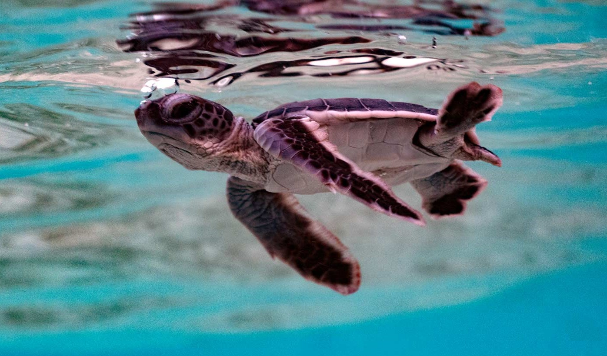

Welcome to Turtle Hatcheries Ceylon
An initiative by the government of Sri Lanka to protect the turtle population in Sri Lanka.

Marine turtles have inhabited the Earth for well over 100 million years. They are cold blooded reptiles and are well adapted to surviving in a marine environment.
Five out of seven species of marine turtles can also be found in the beautiful beaches and
the waters around Sri Lanka.
- Olive Ridley Turtle (Lepidochelys olivacea)
- Leatherback Turtle (Dermochelys coriacea)
- Green Turtle (Chelonia mydas)
- Hawksbill Turtle (Eretmochelys imbricata)
- Loggerhead Turtle (Caretta caretta)
Learn more about turtle categories in Sri Lanka.
However, turtles face threats such as slaughter for meat and entanglement in marine waste, being robbed of their eggs, beach erosion and habitat destruction due to coral mining, to mention a few.
Learn more about threats faced by turtles.
OUR MISSION
The Hatcheries wish to combat the threats faced by turtles by conserving turtle eggs at a safe space where they will be buried in sand until they are hatched. The hatchlings will be moved into tanks for the
first few days of their lives until they are strong enough to face the dangers of the open ocean.
Our mission can be summarized into 3 words as follows:
- Rescue
- Rehabilitate
- Release